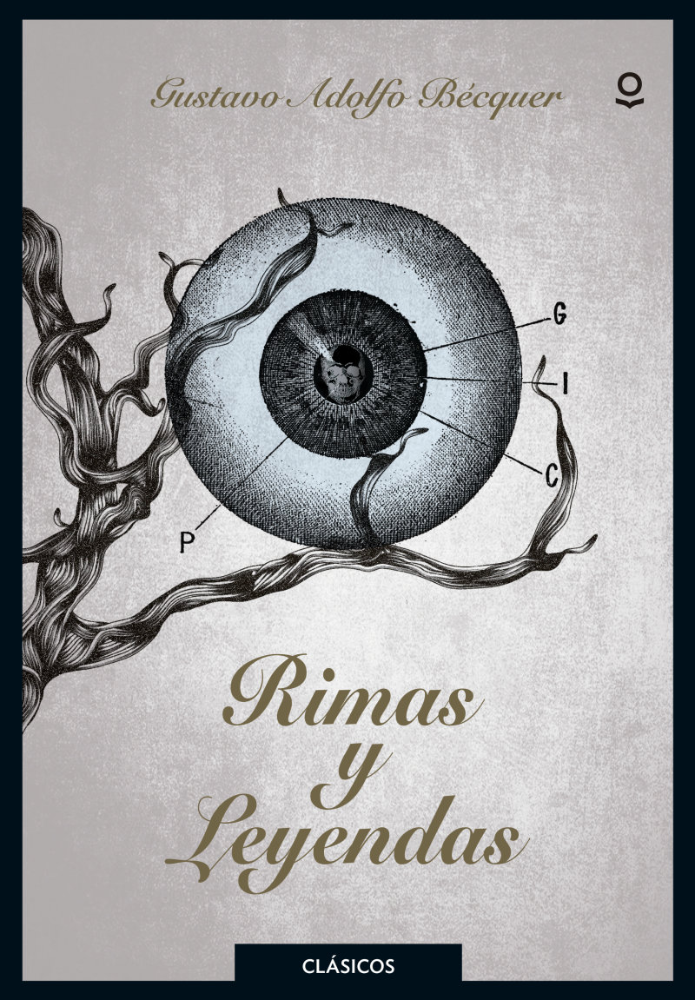

Este género se caracteriza por tramas cargadas de intriga, misterio, crimen y justicia, generalmente desde la perspectiva de un detective o investigador. Ejemplos notables incluyen las novelas de Raymond Chandler y Agatha Christie.
Novela negra o suspense
Novela histórica
Estos libros se sitúan en épocas pasadas y se basan en hechos y personajes históricos, a veces mezclados con personajes y eventos ficticios. Ejemplos de este género son “Los pilares de la Tierra” de Ken Follett y “Yo, Claudio” de Robert Graves. En España, dos grandes referentes de este género son Santiago Posteguillo y Marcos Chicot.
Novela Romántica
La novela romántica es aquella que aborda temas como el amor, la muerte, la sensación de incomprensión o el rechazo al mundo. Suele remontarse a épocas pasadas o lugares lejanos o imaginarios. En este tipo de novela, el mundo emocional de los personajes es central para narrar sus pasiones y los sentimientos de melancolía o soledad que los agobian. La novela romántica surge con el Romanticismo, movimiento que se extiende desde el siglo XVIII hasta el XIX. En ella se expresa narrativamente la fuerza lírica de esta corriente, que tuvo gran importancia en Alemania e Inglaterra, y que luego se expandió por el mundo.
Ciencia ficción
El género de ciencia ficción, enormemente popular y representado en el cine por películas como “La guerra de las galaxias”, es rico en la literatura, explorando sociedades futuristas con tecnologías avanzadas y, a veces, seres de otros mundos. Este género puede fusionarse con la fantasía para crear mundos futuristas con elementos fantásticos o mágicos. La ciencia ficción, parte de la ficción especulativa junto a la fantasía, se distingue por su enfoque en la ciencia real o plausible. Muchas historias se ubican en un futuro lejano, sirviendo de base para tramas de viajes en el tiempo y exploración espacial.
Distopía
Las novelas distópicas, un género popular similar al de ciencia ficción, ofrecen visiones sombrías del futuro, a menudo retratando sociedades post-catastróficas con gobiernos opresivos o devastación ambiental. Aunque las historias distópicas pueden ser un género principal, también pueden combinarse con otros, como la fantasía o la ciencia ficción. Al escribir en este género, se recomienda explorar causas creativas para el colapso de la sociedad.
Aventuras
En estos libros, el protagonista realiza un viaje o una misión llena de emociones, riesgos y desafíos. ‘La Odisea’ de Homero es un clásico de este género. Un escritor independiente bestseller de este tipo de género es: Fernando Gamboa.
Fantasía
La fantasía, uno de los géneros literarios más populares, se caracteriza por el uso de la magia. Este género brinda posibilidades infinitas, desde la incorporación sutil de elementos mágicos, hasta la ubicación de la magia en el centro de la trama, como en «Harry Potter» de J.K. Rowling o «La ciudad de las bestias» de la escritora chilena Isabel Allende.
Contemporáneo
El género contemporáneo incluye libros que se desarrollan en la época actual, abordando problemas cotidianos de la vida de un personaje. Se puede considerar como la ausencia de un género, aunque a veces se combina con otros, como la fantasía o el romance contemporáneo
Terror
Las novelas de terror se caracterizan por tener una trama principal que gira en torno a algo espantoso. Aunque a veces se confunden con la novela negra, estas tienen elementos distintivos. En la escritura de terror, es efectivo hacer lo inesperado, utilizar un lenguaje vívido que apele a los sentidos y añadir elementos reales a las situaciones terroríficas. El género se centra en provocar miedo y anticipación en el lector, lo que se logra a través de la creación del ambiente adecuado, que puede variar dependiendo del subgénero. Por ejemplo, el horror gótico usa escenarios espeluznantes y elementos paranormales.
Paranormal
Los libros dentro de este género contienen elementos sobrenaturales como fantasmas, clarividencia o vampiros, pero difieren de la fantasía al ubicarse generalmente en entornos actuales o reales, sin elementos mágicos o criaturas de fantasía. Sin embargo, es posible combinar ambos géneros. Anne Rice, es famosa por sus novelas góticas, muchas de las cuales tratan sobre vampiros y otras criaturas sobrenaturales. Su serie «Crónicas Vampíricas» es especialmente popular.
Poesía
En la poesía, el lenguaje se utiliza de manera artística y emotiva para expresar sentimientos, ideas o visiones del mundo. Desde los sonetos de Shakespeare hasta los versos libres de Pablo Neruda, la poesía es un género rico y diverso. La poesía es un género literario que no tiene una gran audiencia, pero sus lectores son muy fieles a los poetas. Además, hay un nicho creciente de jóvenes poetas que escriben para un público joven, como es el caso de Irina. Irina es una joven poeta que ha ganado popularidad en los últimos años.
Novela policíaca
La novela policíaca, también llamada novela policial, criminal o detectivesca, es un subgénero de la novela que se caracteriza por contar historias sobre crímenes y delitos. Generalmente, está protagonizada por un detective, periodista o policía que se encarga de resolver el caso.